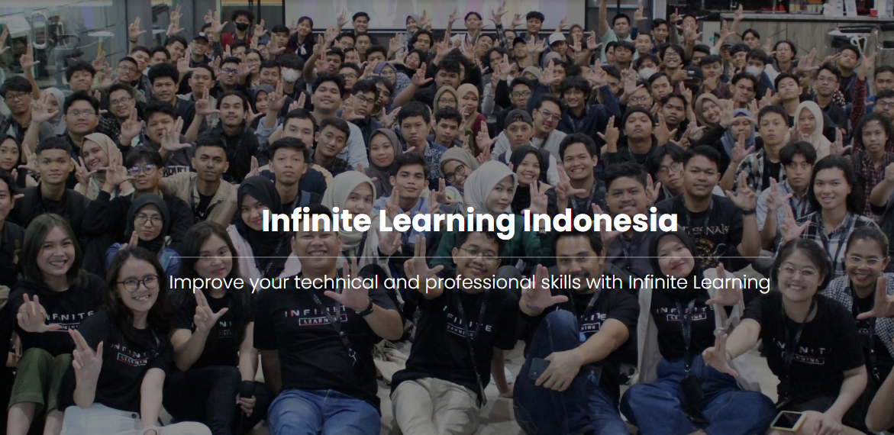
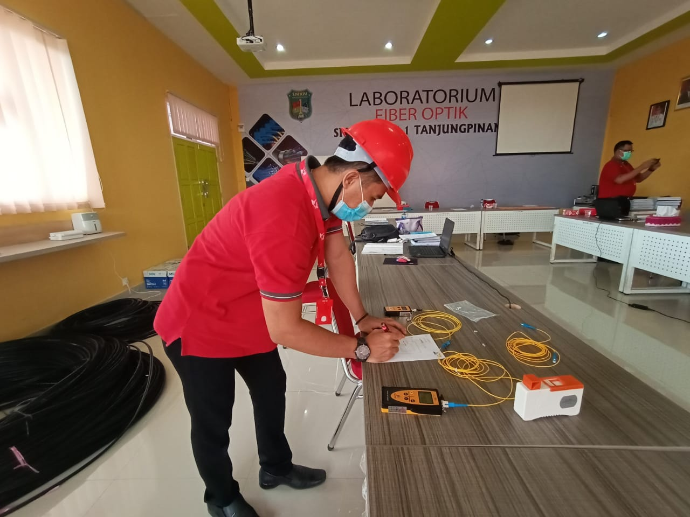

Skill

Belajar CSS

Pelatihan dengan IL

Guru Teknik Komputer dan Jaringan
Keahlian: Pembuatan Website, Instalasi Fiber Optic, Fotografer
Minat: Teknologi Informasi, Pembelajaran Berbasis IT
Seorang pengajar yang bersemangat untuk terus belajar dan berbagi pengetahuan di bidang teknologi. Saat ini, saya mengeksplorasi pembuatan website dan menikmati setiap langkah prosesnya.
Saya memiliki keahlian dalam pembuatan website dan baru-baru ini telah mempelajari instalasi Fiber Optic. Meskipun masih dalam tahap awal pengembangan website, proses belajar ini sangat menyenangkan dan terus memotivasi saya untuk berinovasi.
Di luar mengajar, saya gemar mengeksplorasi berbagai hal berbasis IT, yang selalu membuka wawasan baru. Saya percaya bahwa setiap pengalaman adalah kesempatan untuk berkembang dan berbagi pengetahuan dengan orang lain.
Jangan ragu untuk menghubungi saya jika Anda ingin berdiskusi atau bekerja sama!
Terima kasih telah mengunjungi portofolio saya!
Jl. Pramuka No. 6 Tanjungpinang
Kepulauan Riau, Indonesia